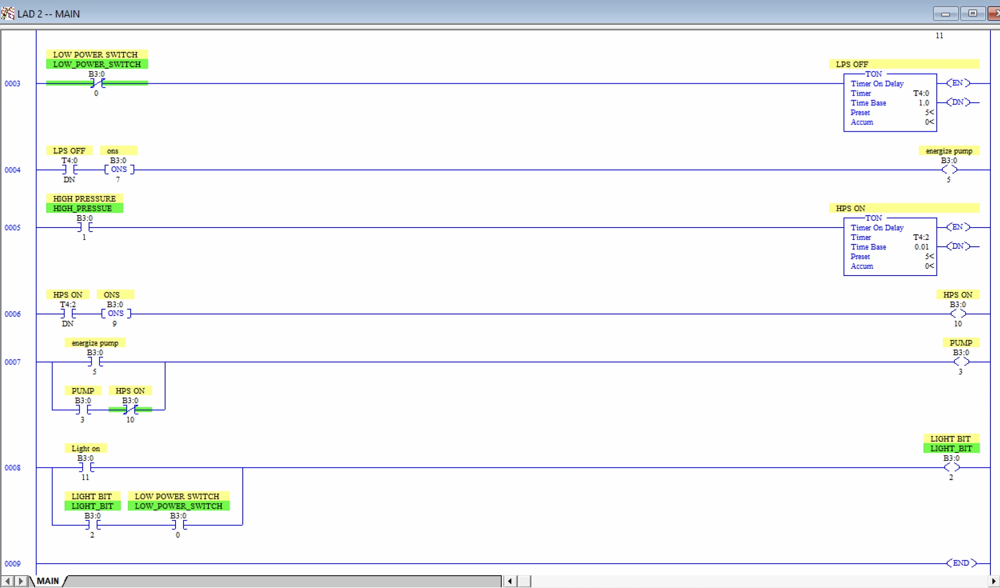
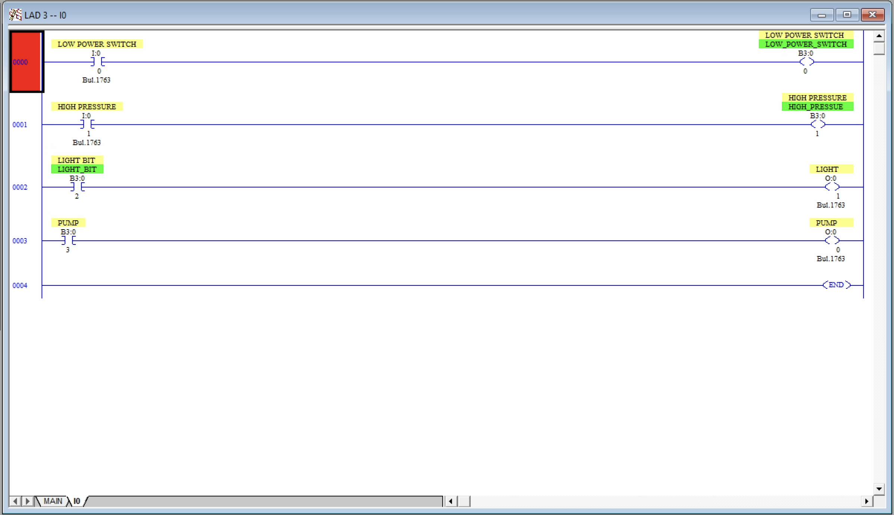

← All projects
Compressor Receiver Pressure Control
A ladder logic project for an Allen-Bradley SLC 500, built in RSLogix 500 and run in Emulate 500. It keeps receiver pressure in a 90–110 psi deadband using two pressure switches, one pump and a run indicator light.
I/O list
| Address | Type | Description |
|---|---|---|
I:0/0 | Input | Low pressure switch (90 psi) |
I:0/1 | Input | High pressure switch (110 psi) |
O:0/0 | Output | Pump |
O:0/1 | Output | Run indicator light |
Concepts
Deadband control, seal-in latching and TON timers. The pump starts at low pressure and a seal-in keeps it running after the low switch clears, so it fills all the way to 110 psi instead of cycling on and off around 90 psi. An I/O subroutine maps the physical I/O to internal bits.
Validation
Tested in Emulate 500 across all four combinations of the two switch inputs. The pump and run light track the correct state in each case.
Training project, run in emulation and not deployed.
Ladder logic



